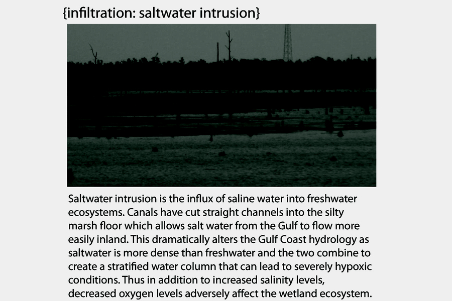
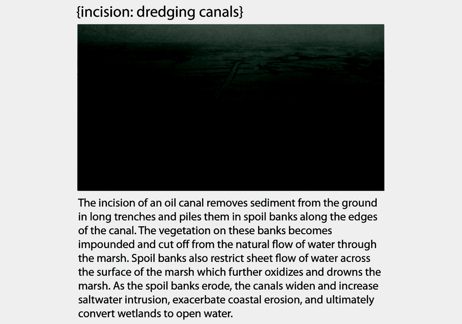
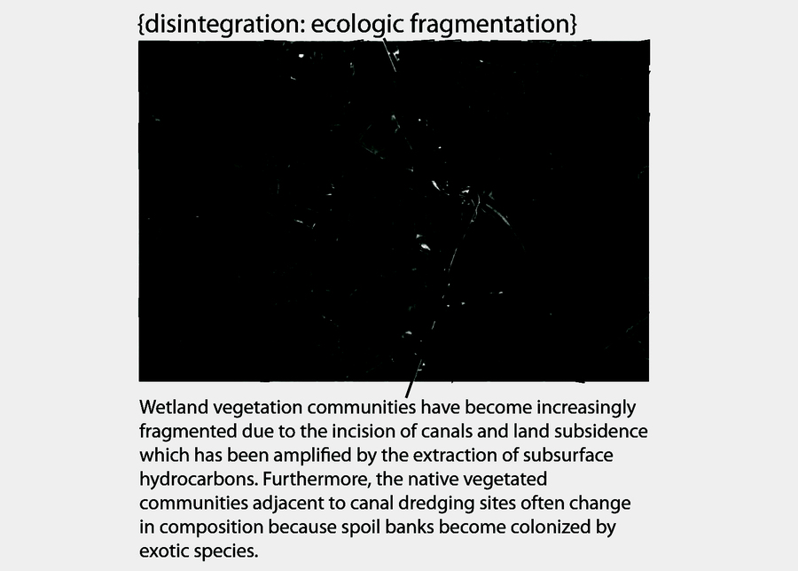

Ephemeral · Ecologies
This advanced research seminar explored animating and modeling ephemeral ecological systems. Students researched ecological processes or constructed systems and deconstructed the process through modeling and animation. They learned techniques necessary to model ephemeral processes such as wind, fire, earth and water using particle systems and other techniques that are at times simulations and at other times illustrations. Digital representation was combined with field observations of ecological processes through recording methods such as video, photography, sensing and sketching in order to fully understand the complex processes that were illustrated. As a research seminar, students became experts on specific software, representation techniques, and their chosen ecological system.“Digital representation will be combined with field observations of ecological processes through recording methods such as video, photography, sensing and sketching in order to fully understand the complex processes that will be illustrated.”



About the seminar
LA 4101 Illustrating Ecologies was an advanced research seminar taught in the Robert Reich School of Landscape Architecture at Louisiana State University in Spring 2010. The seminar explored animating and modeling ephemeral ecological systems, asking students to research ecological processes or constructed systems and deconstruct them through modeling and animation. Students worked in pairs to complete ecological system research, a software/tool review, technique documentation, and a culminating exhibition, documenting their work at lab.visual-logic.com.
Faculty: Bradley Cantrell, Assistant Professor of Landscape Architecture. Meeting: Wednesday, 8:30–11:30. Office hours: Monday 11:30–12:30 or by appointment.